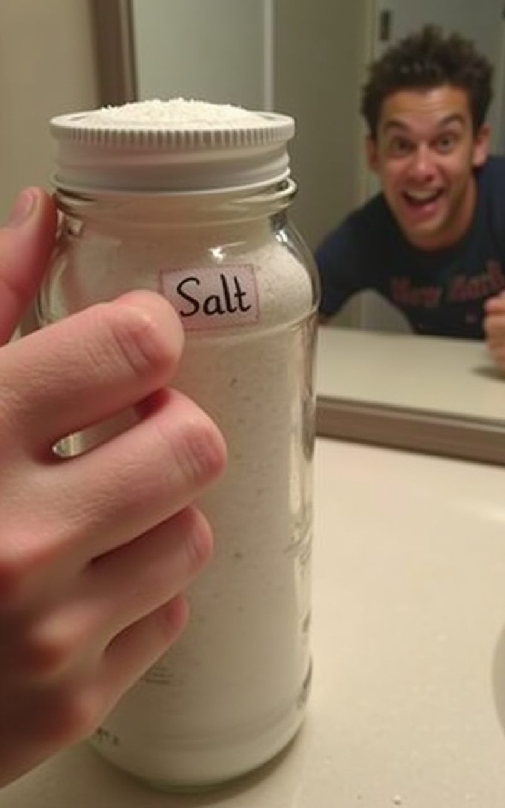
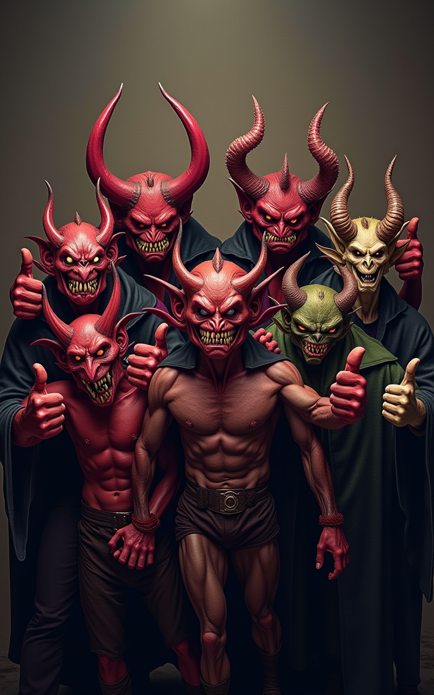

Vom Engel zum Bengel: Dein Crashkurs zum Bösewicht!
- Bist du es leid, immer nur nett zu sein? Fühlst du dich... unterfordert?
- Entdecke die dunkle Seite in dir! Es ist einfacher als du denkst.
- Lerne von den Profis (und ihren Fehlern – ja, wir meinen dich in Szene 5!).
- Dieser Kurs verändert dein Leben... oder zumindest deine Ewigkeit.

Schritt 1: Finde deine teuflische Motivation
- Warum willst du böse sein?
- Machtgier?
- Rache? (Wurdest du aus dem Himmel geworfen?)
- Langeweile? (Standard in der Ewigkeit)
- Um deinen Erbe zu sichern?
- Deine Motivation ist dein Treibstoff! Ohne sie bleibst du beim Donut-Klauen (Szene 3).
- Übung: Schreibe dein "Evil Mission Statement".

Schritt 2: Fange klein an – Die Kunst der Alltags-Bosheit
- Rom wurde nicht an einem Tag zerstört. Deine Bösartigkeit auch nicht.
- Übungsbeispiele:
- Den letzten Keks nehmen.
- Absichtlich langsam gehen, wenn jemand in Eile ist.
- Spoiler zu beliebten Serien verraten.
- Den WLAN-Namen in "Ich_sehe_was_du_tust" ändern.
- Falsche Wegbeschreibungen geben (subtil!).
- Ziel: Das "Bösimeter" langsam steigern, ohne gleich aufzufallen.
Schritt 3: Das Bösewicht-Starter-Kit – Auftreten & Accessoires
- Der Blick: Übe den durchdringenden, seelenfrostenden Blick im Spiegel.
- Das Lachen: Diabolisch, kehlig, markerschütternd. Nicht kichern!
- Die Garderobe: Schwarz ist immer gut. Leder. Stacheln (optional). Ein dramatischer Umhang für große Auftritte.
- Accessoires: Hörner (auch billige Plastikhörner für Anfänger), Dreizack, Schädel als Deko.
Schritt 4: Rekrutiere deine Schergen (oder Lakaien)
- Alleine böse sein ist anstrengend. Du brauchst Personal.
- Typen:
- Die loyalen, aber etwas dummen.
- Der fähige, aber potenziell verräterische.
- Die intriganten Mitstreiter.
- Management: Zuckerbrot (Lollis?) und Peitsche (Androhung der Kammer der Qualen?).
Schritt 5: Meistere Täuschung & Intrige
- Ehrlichkeit ist was für Engel. Lerne zu lügen, zu manipulieren, falsche Fährten zu legen.
- Techniken:
- Verkleidung.
- Gerüchte streuen.
- Falsche Freundschaften schließen.
- Andere gegeneinander ausspielen.
- Denke daran: Misstrauen ist dein bester Freund. Vertraue niemandem!
Schritt 6: Bürokratie als Waffe – Quälen mit Formularen
- Eine unterschätzte, aber hochwirksame Methode.
- Erfinde sinnlose Vorschriften. Verlange unmögliche Dokumente. Richte unzählige, unterbesetzte Ämter ein.
- Das Ziel: Absolute Verzweiflung und der Verlust jeglicher Hoffnung beim Antragsteller.
- Bonus: Macht Spaß, wenn man selbst der Bürokrat ist.
Schritt 7: Der perfekte Monolog – Rede dich ins Rampenlicht
- Kein echter Bösewicht ohne einen guten Monolog.
- Inhalt: Enthülle deinen genialen Plan (aber nicht alles!), deine Motivation, deine Verachtung für das Gute.
- Timing: Kurz bevor du den Helden (oder den Engel) vermeintlich besiegst.
- Übung: Sprich mit einem Schädel oder deinem Spiegelbild.
- Vermeide: Zu lang, zu kompliziert, zu früh freuen.
Schritt 8: Umgang mit Rückschlägen & Konkurrenz
- Nicht jeder Plan gelingt.
- Konkurrenten werden versuchen, dich auszustechen.
- Strategien:
- Lerne aus Fehlern (oder schieb die Schuld auf deine Schergen).
- Sei flexibel: Improvisiere!
- Eliminiere die Konkurrenz (subtil oder direkt).
- Niemals aufgeben! Böse sein ist ein Marathon, kein Sprint.

Abschluss & nächste Schritte: Willkommen im Club!
- Herzlichen Glückwunsch! Du hast die Grundlagen des Bösen gemeistert.
- Was nun?
- Üben, üben, üben!
- Finde einen Erzfeind (macht mehr Spaß).
- Arbeite an deinem Beitrag zum Bösimeter!
- Tritt einer bösen Organisation bei (Vorsicht vor internen Machtkämpfen).
- Denk dran: Böse sein ist kein Zustand, es ist eine Lebenseinstellung! Viel Erfolg bei deiner finsteren Karriere!